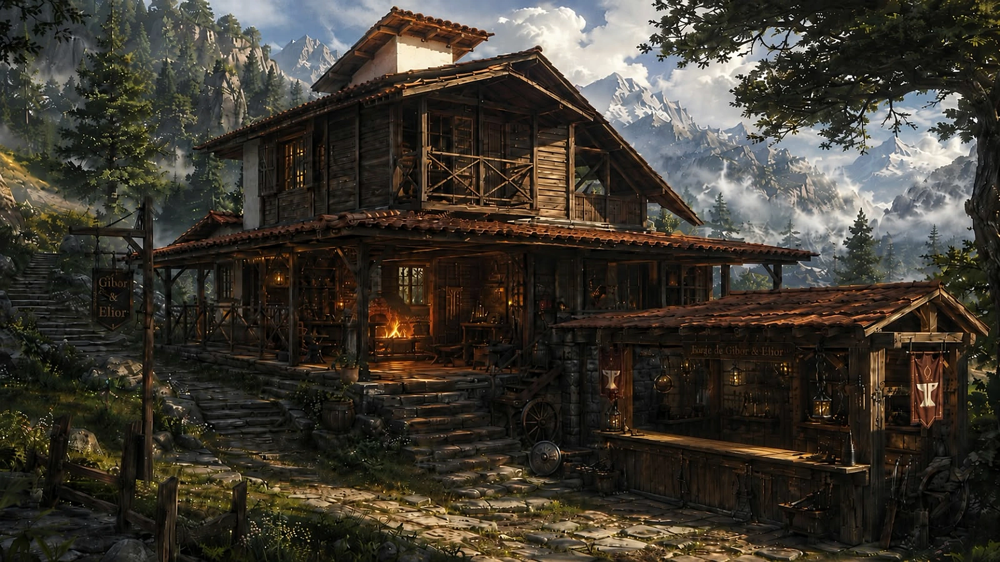
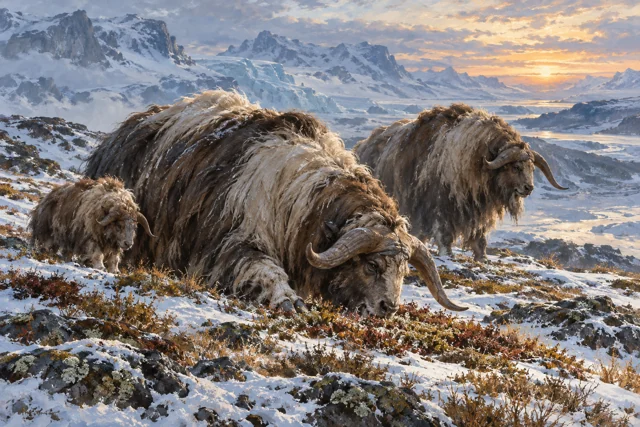
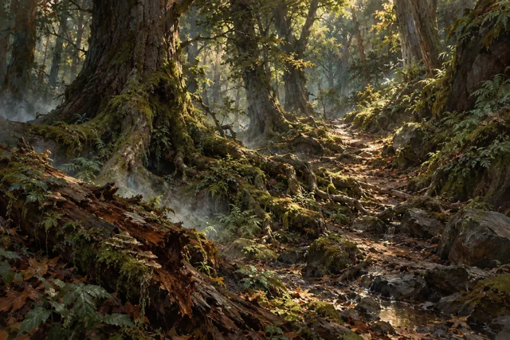
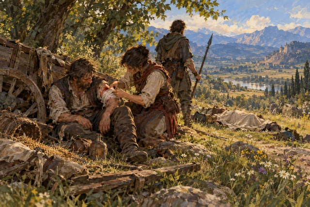
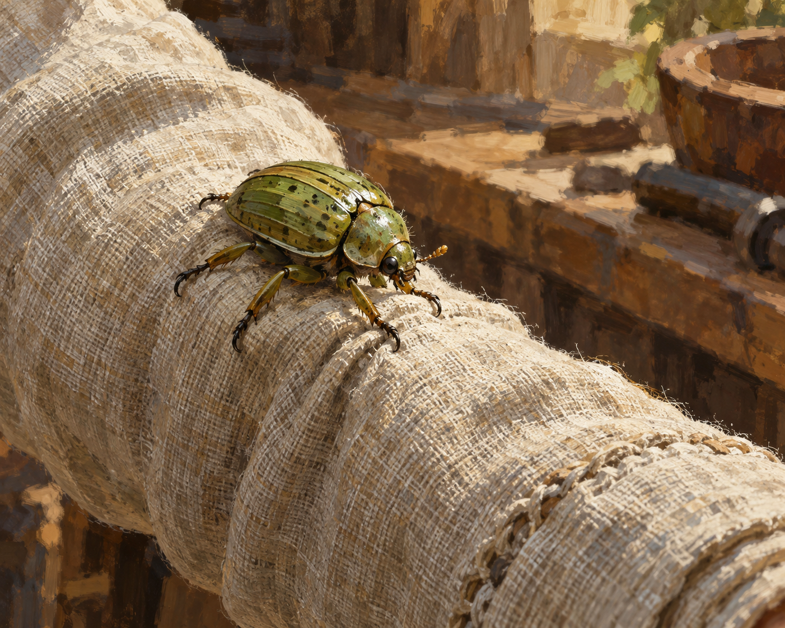

Romance · Livro I
O Filho da Montanha
Leitura disponívelHelior cresce entre o som do martelo, os segredos da montanha e um mundo muito maior do que aquilo que consegue ver do vale.
16 capítulosBeta 15Ler agora →
Romances, crônicas e registros de eras diferentes. Encontre sua próxima leitura e conheça os lugares, as criaturas e as histórias de Lumyriel.
Escolha uma capa para abrir o livro.
Na biblioteca, livros canônicos e obras derivadas não canônicas têm categorias próprias.
Lugares, paisagens e caminhos reunidos no projeto de cartografia do mundo.
Conhecer o Atlas →Origem, aparência, cultura, habilidades e história para personagens que pertencem a Lumyriel.
Abrir o criador →Construindo Mundos e Narrar Mundos Vivos compartilham métodos de construção e escrita.
Ver obras derivadas →
Casa na florestaCidades e cotidiano
Brumais na depressão da tundraCriaturas
Trilha entre raízes na floresta brumosaPaisagens
Viajantes na estradaCenas e aventurasPorto dos navios celestesCidades e cotidiano
Besouro-agarrador — na mangaCriaturasArtes conceituais de Lumyriel, geradas com inteligência artificial e aprovadas pelo autor, com títulos vinculados ao cânone do universo.